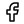
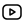

Siaran Pers•
Soroti Peran Indonesia dalam Perlindungan Laut Global, Aktivis
Greenpeace Desak Komitmen Pemerintah
#50 Tahun
#Aktivisme
#Laut
Peran Indonesia sebagai negara kepulauan terbesar di dunia
sangat vital dalam upaya mewujudkan target 30x30 ini. Dan tahun
2030 tinggal tujuh tahun lagi. Apabila target ini tidak
tercapai, Indonesia akan menjadi salah satu negara yang
mengalami dampak kerusakan lingkungan paling parah.
Greenpeace Indonesia•23 Februari 2023
Cerita•
Memupuk Rasa Cinta Lingkungan Sejak Dini
#Lingkungan
Lingkungan hidup adalah hal yang penting bagi kehidupan manusia
di dunia ini. Agar kita tetap dapat tinggal dengan nyaman dan
tenteram, kita perlu menjaga kelestarian lingkungan hidup kita
dengan baik.
Gina Santika•5 Februari 2023
Publikasi•
Laporan 2020-2021: Apa yang ada di balik cakrawala?
#Iklim
#Udara
#Hutan
#Laut
#Aktivisme
#Demokrasi
#EnergiTerbarukan
#Kota
#Polusi
Tak perlu diragukan lagi, tahun 2020 dan 2021 merupakan
tahun-tahun yang sangat menantang. Kerja-kerja kampanye kami
perlu berubah dan beradaptasi dengan situasi yang dinamis dan
berubah-ubah.
Greenpeace Indonesia•21 Februari 2023
Cerita•
Wakaf Hijau: Berderma dengan Prinsip Berkelanjutan
#Ummah4Earth
#Iklim
Wakaf Hijau (Green Waqf) adalah sebuah konsep yang beberapa
tahun terakhir semakin populer. Apa sih Wakaf Hijau?
Nouhad Awwad dan Madeleine Arnaout•17 Februari 2023
EnvironThink
EnvironThink berfokus pada isu-isu lingkungan dan solusi untuk menjaga keberlanjutan alam. Website ini mengingatkan keterkaitan antara lingkungan dan pemikiran, serta pentingnya mempertimbangkan dampak lingkungan dalam keputusan dan tindakan kita sehari-hari.
Informasi Kontak
0351 2345 678
greenpace@gmail.com
Jl. Kenangan No. 99 Planet Mars
Ikuti Sosial Media Kami




Copyright 2023. Greenpeace. All Right Reserved.
2023. Greenpeace. All Right Reserved.
Indonesia
2023. Greenpeace. All Right Reserved.
Menjadi Aktivis Digital
Jangan biarkan suaramu hilang di kerumunan
jadilah aktivis digital dan berikan pengaruhmu pada dunia
Pelajari Isunya
Pengetahuan adalah kunci untuk melindungi Bumi dengan lebih
tepat dan efektif. Mari bersama-sama pelajari isunya
Bagikan Kampanyenya
Bagikan pengetahuan tentang lingkunganmu kepada orang lain,
sehingga mereka dapat ikut ambil bagian dalam menyelamatkan
Bumi kita yang sama.
Lakukan Aksi

Home
 Aksi
Aksi